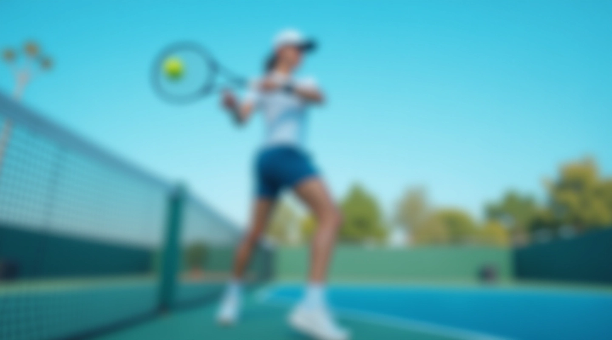
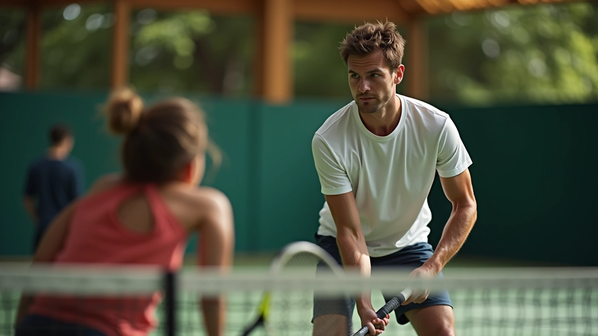

تمارين الضربة الطائرة والاقتراب من الشبكة
تعلم التقنيات الأساسية لإتقان الضربة الطائرة والحركة الصحيحة نحو الشبكة في التنس
نحن نقدم دليلاً شاملاً يجمع بين الشرح النظري والتطبيق العملي لمساعدتك على تطوير مهاراتك في اللعبة. سواء كنت مبتدئاً أو لاعباً متقدماً، ستجد هنا ما تحتاجه لتحسين أدائك.


ابدأ رحلتك نحو الاحترافية
استكشف مجموعتنا الشاملة من التمارين والدروس المصممة لتطوير مهاراتك في الضربة الطائرة والاقتراب من الشبكة
اطلع على جميع الدروسعن مركزنا التدريبي
منذ عام 2019، نركز على تقديم محتوى عملي حول تدريب التنس. فريقنا يعمل على تجميع وتنظيم المعلومات حول تدريب التنس يعملون على تطوير المهارات الأساسية والمتقدمة للاعبين من جميع الأعمار.
التركيز الأساسي لنا ينصب على تعليم الضربة الطائرة والاقتراب الصحيح من الشبكة، وهما من أهم المهارات في التنس الحديث. نستخدم منهجاً منظماً يجمع بين التقنية السليمة والتطبيق العملي المستمر.
كل درس مصمم بعناية لضمان فهم واضح للمفاهيم وتطبيقها بشكل صحيح على الملعب. نعتقد أن التقدم يأتي من خلال الممارسة المنتظمة والتوجيه المهني.
كيفية تطوير مهاراتك
نتبع منهجاً منظماً لضمان تطورك المستمر
تعلم الأساسيات
نبدأ بشرح تفصيلي لموضع القدمين والقبضة والحركة الأساسية للضربة الطائرة. فهم القواعد الأساسية ضروري قبل الانتقال للمرحلة التالية.
ممارسة التمارين
نقدم مجموعة متنوعة من التمارين المتدرجة التي تركز على تحسين الدقة والسرعة والتحكم. كل تمرين مصمم لتقوية جوانب محددة من مهاراتك.
تحسين التوقيت
التوقيت المثالي هو مفتاح النجاح في الضربة الطائرة. نركز على تطوير قدرتك على قراءة الكرة والرد عليها في اللحظة المناسبة.
التطبيق في المباريات
بعد إتقان المهارات الأساسية، ننتقل إلى التطبيق العملي في مواقف اللعب الفعلية والمباريات المحاكاة.
دروسنا المميزة
استكشف أهم المواضيع والتمارين

إتقان الضربة الطائرة: التقنية الأساسية والخطوات العملية
شرح مفصل لكيفية تطوير الضربة الطائرة من الصفر — بدءًا من موضع القدمين وحتى المتابعة الصحيحة للكرة.
اقرأ المزيد
الاقتراب من الشبكة: التحرك الصحيح والتوقيت المثالي
تعلم كيفية الاقتراب الآمن والفعال من الشبكة مع الحفاظ على توازنك وجاهزيتك للرد السريع.
اقرأ المزيد
تمارين فعالة لتحسين الضربة الطائرة والتركيز
مجموعة من التمارين العملية التي تقوي دقة ضربتك الطائرة وسرعة استجابتك عند الشبكة.
اقرأ المزيدأسئلة شائعة
إجابات على الأسئلة التي تطرحها أغلب اللاعبين
ما هي أفضل طريقة لتعلم الضربة الطائرة؟
نبدأ بفهم الحركة الأساسية والموضع الصحيح للجسم. المفتاح هو الممارسة المنتظمة مع التركيز على التفاصيل الصغيرة. نقدم تمارين متدرجة تساعدك على بناء المهارة تدريجياً بدون تسرع.
كم من الوقت يستغرق إتقان الضربة الطائرة؟
هذا يعتمد على مستواك الحالي والوقت الذي تستثمره في التدريب. معظم اللاعبين يرون تحسناً ملموساً بعد 4-6 أسابيع من الممارسة المنتظمة. الإتقان الكامل يتطلب صبراً واستمراراً في التدريب.
هل يمكن للمبتدئين تعلم هذه المهارات؟
بالتأكيد! دروسنا مصممة للجميع من المبتدئين إلى اللاعبين المتقدمين. نبدأ بالأساسيات ونتدرج تدريجياً نحو التقنيات الأكثر تعقيداً. كل شخص يسير بسرعته الخاصة.
ما الفرق بين الضربة الطائرة والضربة العادية؟
الضربة الطائرة تُؤدى قريباً من الشبكة عندما تكون الكرة في الهواء، بينما الضربة العادية تُؤدى من خط الأساس. الضربة الطائرة تتطلب ردود فعل أسرع وتوقيتاً دقيقاً جداً.
هل هناك تمارين محددة لتحسين التوقيت؟
نعم، لدينا مجموعة كاملة من التمارين المتخصصة لتطوير التوقيت. هذه التمارين تركز على قراءة الكرة والرد السريع والحركة الانسيابية نحو الشبكة.
موارد إضافية
استفد من مجموعة شاملة من الأدوات والمعلومات
الدليل الشامل
وثيقة شاملة تغطي جميع جوانب الضربة الطائرة والاقتراب من الشبكة مع صور توضيحية.
شروحات فيديو
سلسلة فيديوهات تفصيلية توضح كل خطوة من خطوات التعلم بشكل بصري سهل الفهم.
برنامج تدريبي
برنامج منظم يمتد لعدة أسابيع يساعدك على تحسين مهاراتك بشكل منهجي ومنظم.
المجتمع
انضم إلى مجتمعنا من لاعبي التنس لتبادل الخبرات والنصائح والتجارب.
هل تريد معرفة المزيد؟
تواصل معنا اليوم للحصول على استشارة شخصية وخطة تدريبية مخصصة تناسب احتياجاتك وأهدافك.
نستخدم ملفات تعريف الارتباط لتحسين تجربتك على موقعنا. بمتابعتك، فإنك توافق على سياسة الخصوصية الخاصة بنا.